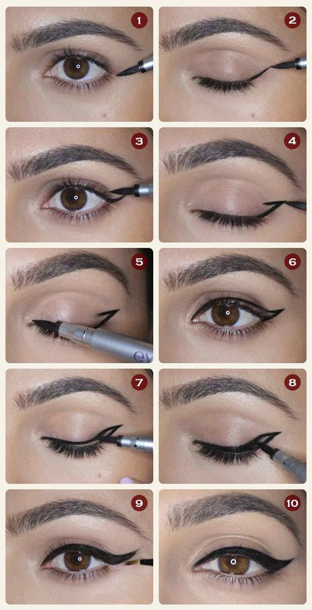

Home
Lips
Nails
Brows
Blush
Eyes
About
Contact Us
All about eyes
Easy Step-by-Step Winged Eyeliner Pictorial

This is an easy step-by-step pictorial to help you achieve that perfect winged eyeliner.